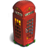

Получено: файл; исходный URL. Иллюстрация объекта в исторической браузерной версии; исходная страница ссылается на zombicity.info, скачан файл по тому же пути на moy.su — побайтовое совпадение не проверено. Для разных космических пристаней и телефонных будок источник использует общие пиктограммы; это не доказательство идентичности построек. Страница: источник.
Телефонная будка — космические направления
Историческая браузерная версия ВКонтакте; редакция неизвестна- Тип
- Постройка
- Версия и дата
- Историческая браузерная версия ВКонтакте; редакция неизвестна
Данные по источнику · браузерная версия ВКонтакте; редакция не установлена · 07.10.2018 — публикация, дата последующей редакции неизвестна
Предварительно: Фанатский источник; текущие условия и независимость от других справочников не установлены.. Требуется сверка.
- Строительство
- 25 единиц материала «Время», 15 микросхем, 30 лампочек; указано задание «Вовремя»; 100 опыта.
- Маршруты 1
- Звёздный перевал: 10 Времени, 20 000 монет, 3 листа золота. Святилище: 5 нефти, 45 000 монет, 1 Солнечные часы. Туманный: 2 нефти, 45 000 монет, 1 Огонь.
- Маршруты 2
- Комета: 5 зеркал, 65 000 монет, 3 грибной текилы. Зомбикрон: 1 микросхема, 30 000 монет, 5 золотой пыли. Одинокий: 5 Гипносна, 30 000 монет, 5 Гипномаков.
- Маршруты 3
- Кулички: 1 кинолента, 5 единиц материала «Мир», 100 000 монет. Ловушка Злоки: 5 Времени, 1 лунный камень, 75 000 монет. Планета Злоки: 1 чёрное сердце, 2 кирпича, 150 000 монет.
- Оговорка
- Отдельный объект источника №819; периодичность, актуальность и доступность маршрутов не установлены.


Данные по источнику · браузерная социальная игра; платформа не уточнена · дата статьи в URL; время поздних изменений неизвестно
Предварительно: Фанатские описания; цены и условия могли отличаться по версии или меняться.. Требуется сверка.
- Маршрут с Домашнего
- Zombie-island описывает отдельную версию «Телефонная будка 3» со стадией 25 Времени, 15 микросхем, 30 лампочек. К Звёздному перевалу: 10 Времени, 20 000 монет и 3 листа золота.
- Разногласие
- Для маршрута с Домашнего в Святилище текст Zombie-island буквально указывает 45 монет, а ViveR_9 — 45 000. Это может быть опечаткой или различием редакций; подтверждения нет. Луноход со Звёздного перевала — другой путь, его цена 45 000 не доказывает цену Будки.
Связанные сущности
нет проверенных связей — требуется сверка.